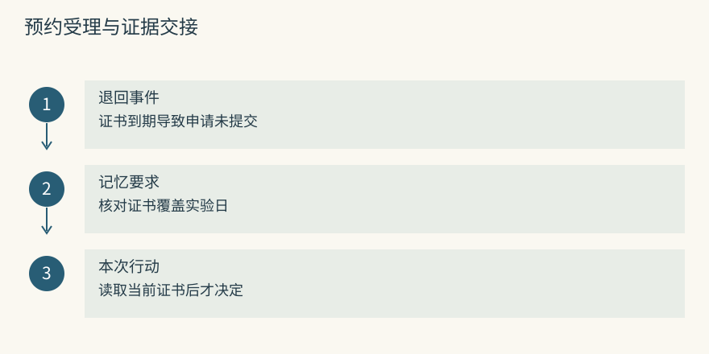
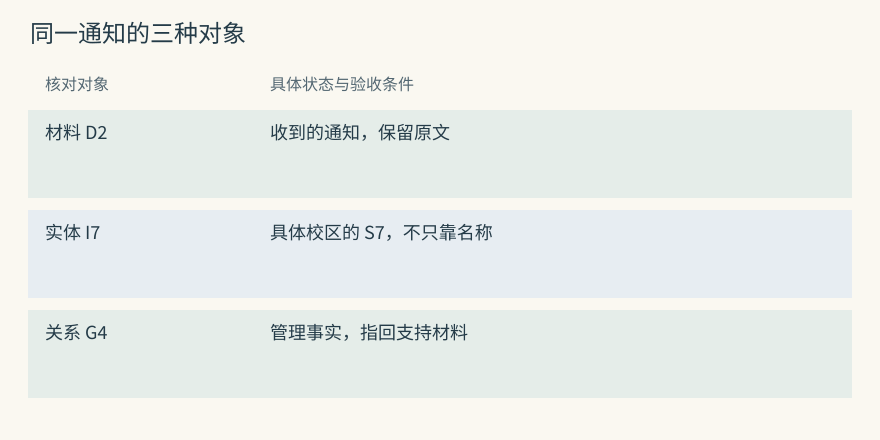
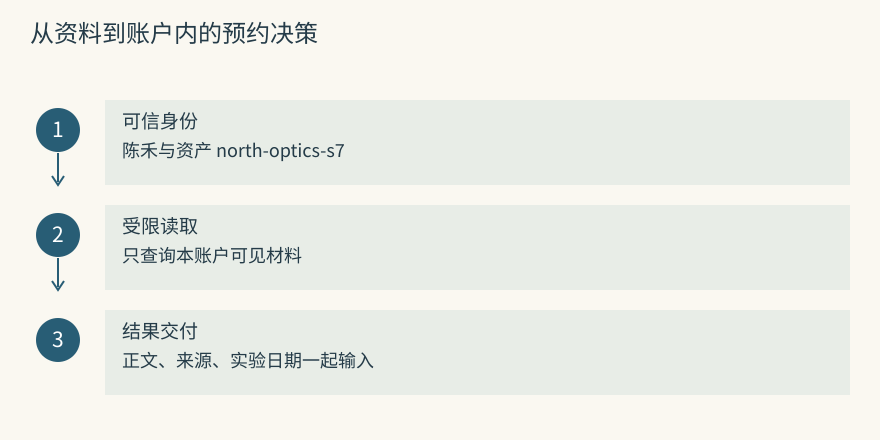
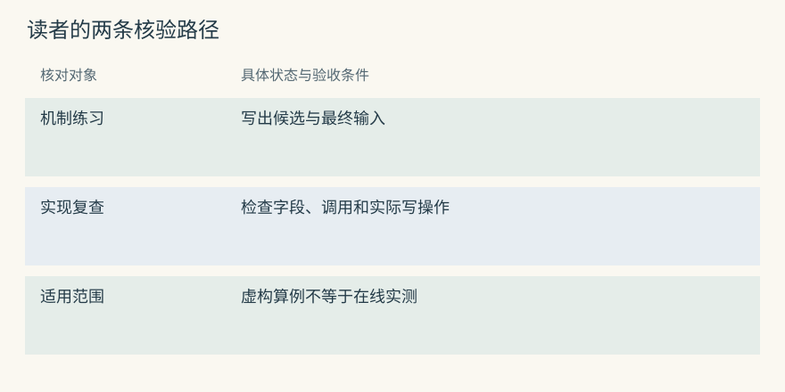
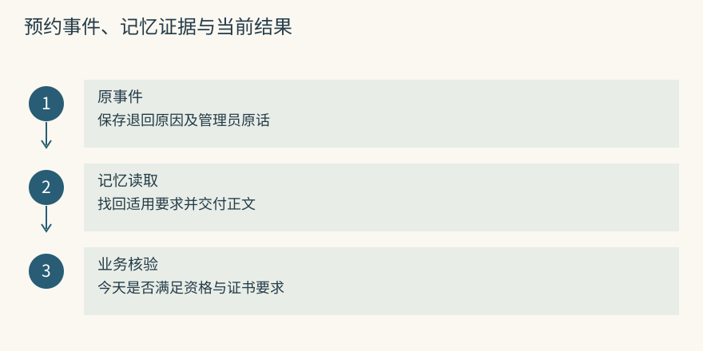

前言：记忆不是聊天记录
本书用一所大学的共享仪器室做教学场景。学生陈禾预约光谱仪 S7，管理员维护预约规则、校准报告和交接记录。人物、仪器编号及下面的处理结果都是教学设定；Mem0 与 Graphiti 的段落描述应检查的输入和状态，不冒充在线服务的运行报告。
折叠区保留实现入口。阅读时可以先看预约为什么出错，再展开检查记录怎样保存、结果怎样返回。图中的编号只在算例内有效，不能复制到真实服务当作对象 ID。涉及源码的说明限定于书中保存的仓库快照，应用层补做的权限、审核和执行会单独指出。
从一个会忘事的助手开始
陈禾让助手预约周二上午的 S7。预约接口接受了请求，仪器室却退回申请：上次校准证书已经到期。管理员解释：“预约 S7 前，先核对证书覆盖实验日期。”一周后，陈禾重新打开会话，要求预约下周的时段。助手若只收到新的预约要求，就可能再次提交一个不符合条件的申请。
要避免重演，应用得留下那项检查要求，按仪器和实验日期找到它，并在提交预约前让决策程序读到。聊天归档只完成了保存原材料。一个能供审计下载、却从不参加任务读取的日志库，不能改变下一次预约。
现在加入一句“今天只是演示预约页面，不提交申请”。它限制的是本次演示，不能写成“S7 禁止预约”。同一条消息既可能包含可复用的要求，也可能包含很快结束的例外。记忆需要保存这种差别，否则它会把一次失误变成长期障碍。
用 Mem0 可以尝试形成短事实“预约 S7 前核验证书有效期”。下一次应用搜索 S7 的预约要求，取回事实后再检查今天的证书。用 Graphiti 可以保留“S7 由光学实验室管理”和“光学实验室的预约复核人为周岚”两条关系。回答谁复核时，应用要把两段连接和来源查齐，不能从仪器名猜人名。
源码与边界（选读）

在 Mem0 中，教训先成为可以搜索的事实
设原事件为 booking-14，包括退回原因和管理员原话。应用先检查其中是否有学生证号等不宜长期保存的字段，再把允许记忆的消息送到 add()。普通推断写入可以借助模型提取事实；期望候选保留“实验日期”，因为证书今天有效，不代表下周实验时仍有效。
search() 是另一项操作。它返回可读记忆及管理字段，宿主负责把正文加入预约助手的输入。提取模型负责把材料整理短，回答模型负责规划这一次任务，两者即便选了同一个模型，也属于两次调用。查到了检查要求，还要由宿主调用证书查询工具，不能把搜索成功当作预约已经合规。
在 Graphiti 中，教训成为有来源的关系
把仪器室通知作为 episode 输入，可以从中识别 S7、光学实验室、周岚等实体，再形成管理或复核关系。Episode 保存收到的材料；实体给对象确定身份；边表达对象间的事实。调用入口 add_episode() 组织这些工作，但模型不一定生成与教学图完全相同的节点和关系名。
若只知道 S7 属于光学实验室，还缺复核人的证据。应用可以继续查询实验室，取出第二条边，并核对复核是否针对仪器预约。周岚同时负责耗材报销并不能支持预约答案。关系的用途、端点和来源都一致，才有理由把姓名交给回答模型。
你需要知道什么，不需要知道什么
这里的 Agent 是一个围绕模型运行的程序：它接收任务、请求工具、读取结果，必要时继续下一步。模型一次能读到的消息、规则和工具说明组成当前上下文。Token 是模型计量文本的单位，不能直接用汉字数代替。即使窗口足够大，每轮重发全部历史也会增加费用和干扰。
概念部分只要求能区分输入、状态和输出。向量、全文索引、关系图会在需要它们时用小数据解释。代码实验使用 Python 标准库和本地 SQLite，不要求读者申请模型服务，也不需要 GPU。实验能验证记录跨进程保存和按用户筛选，不能验证真实抽取模型的质量。
读项目时先认清返回对象。假设 Mem0 返回记录 C8，正文说明 S7 的证书检查要求，C8 用于定位和更新，真正让模型理解内容的是正文。Graphiti 中，材料 D2、仪器节点 I7、管理关系 G4 是不同对象。把 D2 当作节点 ID 去查仪器，或拿节点摘要替代证据，都会让读取路径出错。
源码与边界（选读）

Mem0 的学习入口是消息与短事实
存储后端一般既有向量，也有正文及附加字段。Embedding 将文字映射成数字序列，用来比较表达是否接近；它没有把校准要求写进回答模型的权重。向量接近也不能证明证书有效。
源码中的 payload 是随记录保存的一组字段，data 放事实正文，metadata 可携带应用的事件编号或业务范围。搜索返回的 memory 是给人阅读的文本。应用若只把 ID 和分数交给回答模型，模型仍不知道 C8 要求做什么。来源字段的业务含义也得由应用约定，保存了 booking-14 还要有办法读回对应事件。
Graphiti 的学习入口是 episode、entity 与 edge
一次实验室通知可以得到材料 D2，仪器 S7 得到实体编号 I7，“S7 由光学实验室管理”得到关系 G4。UUID 是这类对象的唯一标识，名称只是显示文字。同名的 S7 可能属于另一校区，不能仅因名字相同就合并。
边的 fact 提供关系陈述，episodes 指向支持材料；节点的 summary 提供概览。概览适合发现相关对象，具体预约要求应回到事实边和材料核对。图里显示了三条连线，并不能说明三条线都支持当前问题，更不能据此认定任何人已经批准本次预约。
先把两条最小流程跑在纸上
准备一张预约卡和两份通知。预约卡写“陈禾申请 11 月 6 日使用 S7，提交前核对校准覆盖该日”；通知甲写“S7 属于光学实验室”，通知乙写“光学实验室的预约由周岚复核”。另一个学生余澄有自己的预约数据，不能因为使用同一仪器就读到陈禾的私人安排。
事实路线可以手算为：从预约卡抽出长期要求，保存其主体、仪器及来源；新请求来到时，先确定可读集合，再搜索证书检查要求；最终输入里给出检查要求和当前实验日期。关系路线则先将两份通知连接到同一个实验室对象，再查询完整复核链。两条流程都要从外部记录回到本次输入，差别是保存和寻找证据的单位。
这里的成功标准也不同。事实路线要检查条件有没有在压缩时丢失；关系路线除了检查文字，还要核对中间节点是不是同一个实验室。两张通知都写“实验室”，并不足以证明它们描述的是同一个部门。
源码与边界（选读）

Mem0 写入时，长消息在哪里变短
管理员说：“昨天申请退回，因为证书只到月底；以后预约 S7，要核对证书覆盖实际实验日。”应用保留原事件，再调用普通 add()。当前同步实现会结合近期消息和召回的相关事实生成新增候选，因此“以后也这样”这类省略表达有机会被解释，但它没有遍历整个历史库。
假设候选是“使用 S7 前检查校准证书”。这还不够：它把提交预约之前的检查挪到了使用之前，也删了覆盖实验日期的条件。应用要对照原话判断是否接受，不能只检查 JSON 能否解析。合格候选可以存成“提交 S7 预约前，核对证书有效期包含实验日期”，再附 booking-14 作为来源。
写入会为正文生成向量、hash 和检索相关字段，事实后端与消息/变更历史承担不同职责。相同正文的 hash 可辅助查重，换一种说法通常会得到不同 hash。一轮没有新增事实可以正常结束；模型请求失败则是处理故障。两者都可能返回很少内容，监控不能只计条数。
原事件 booking-14 已保存
候选一：使用前检查证书 拒绝，检查时机变了
候选二：提交前核对实验日的有效期 接受，保留限定条件
接受结果：正文、范围、来源进入事实存储
复查入口：booking-14 对应的清洗后原话Mem0 读取时，为什么还需要应用多做一步
下周陈禾说“约 11 月 6 日的 S7”。应用从登录信息确定陈禾的可见范围，以仪器和预约要求搜索，假设得到 C8。接着取出 memory 正文，并把来源、适用日期和本次任务一起组织成输入。搜索接口没有替宿主发送这段提示，也没有替宿主调用仪器管理系统。
可以把交接结果写成：“历史要求来自仪器室通知，预约前要核验证书覆盖 11 月 6 日；当前证书尚未查询。”这样模型不会把历史退回当作今天仍不合格。工具随后若报告证书已延长到 12 月，预约可以继续；若到期日仍是 10 月 31 日，就停在提交之前。
C8 被搜索返回：只说明相关资料已找到
C8 被组装进输入：模型这次能够阅读要求
证书工具返回到期日：提供当前状态
预约接口接受申请：记录本次业务结果Graphiti 写入时，为什么要认出对象再连关系
通知甲与通知乙必须连接到同一个光学实验室。提取时生成的临时实体会与已有实体比较，解析后替换成规范 UUID。若把北校区与南校区的光学实验室误合并，S7 的复核人就可能指向另一个校区的管理员。
教学建模可以表示为以下资料账簿。编号为便于阅读而简写，不是 API 返回值。
| 材料 | 抽取端点 | 可核验的事实 | 后续检查 |
|---|---|---|---|
| D2，设备归属通知 | I7=S7，L1=北校区光学实验室 | I7 由 L1 管理 | S7 的校区与资产号 |
| D3，复核职责通知 | L1，P6=周岚 | L1 的预约复核人为 P6 | 职责是否只限预约 |
解析关系时还会比较重复与可能变化的旧事实。原材料、规范节点、事实边以及相互引用需要一起检查。图能显示正确姓名，却仍可能把姓名连到了错误仪器；验证端点不能省略。
Graphiti 读取时，连线和答案之间还隔着核验
基础 search() 返回相关事实边，不承诺自动完成从仪器到实验室再到人的整条路径。应用可以先查 S7，再按实验室补查，或明确使用合适的高级搜索配置。查齐后确认三件事：两条边指向同一个实验室对象，职责针对这次预约，目标日期仍在有效期内。然后按 episodes 读支持材料。
若通知后来写“11 月 1 日起由顾宁接任”，关系路线需要保留旧复核关系曾经成立的区间。问 10 月的预约为什么找周岚，与问今天找谁，是两个时间查询。默认追加短事实也能保存变更文字，但它不会仅靠入库时间自动得到关系有效区间。框架选型应落到这些实际问题，而不是比较图上节点数量。
怎样跟着学
仪器预约贯穿前半部的机制练习。每次都尝试写出一项中间状态：提取后的正文、当前可读集合、最终输入，或新旧关系区间。写不出时，可以回到原事件检查，没必要先背数据库或项目名称。
第 4 章的命令使用现有最小程序，只做手工记忆和本地检索。真实项目对照集中在折叠区，那里会说明哪些动作来自库，哪些来自宿主。后续项目章节仍按各自数据和边界阅读，不把一个项目的默认值借给另一项目。
对照 Mem0 时，留意“提交前”“覆盖实验日”有没有从原话走到短事实。对照 Graphiti 时，画出“S7、实验室、复核人”的端点，再加入交接日期。若只能回答今天的姓名，却解释不了上个月的办理记录，就还缺历史视图或当时输入证据。
源码与边界（选读）

两条标志性实现怎样贯穿全书
Mem0 段落采用“消息、候选事实、已存记录、返回正文”的观察顺序；Graphiti 段落追踪“材料、规范实体、事实边、支持来源”。二者的共同终点是宿主组装的输入，不是接口的成功响应。测试时可以给每一步写一个预期，再检查实际数据是否符合。
实现说明锁定 Mem0 a39a802bbc93e85b820078cd3c4dbaf53af25dbe 与 Graphiti 0de2993c5199ebd4c1efcf09ea9984ec4e53e86f。Mem0 主要看同步入口，Graphiti 看 episode 处理与搜索模块；其他版本可能改变参数和默认配方。书中的服务调用片段用来说明契约，除本地标准库实验外，不表示已经部署这些依赖。
入口分别为 Mem0 主模块 和 Graphiti 主模块。想核对提取时从写入入口追，想核对漏召回时从搜索集合追。技能审核、租户认证、当前证书查询和工具授权都不能因为出现了记忆接口就视为已经完成。
资料索引与项目导航（选读）
为共享仪器室接入记忆，可以从一次预约的责任分配开始：事件采集器保留退回信息；提取器提出检查要求；存储维护事实和来源；读取器选择本次需要的证据；预约服务验证权限并提交。把这些职责全部称为“记住”，排障时就无法分清资料没存、没搜到，还是没被执行。
还有几个需要预先说清的决定。证书有效期来自仪器管理系统，不能由聊天印象覆盖；本次演示在任务结束后退出当前状态；管理员职责交接要保留日期；私人实验安排不能混入公共仪器规则。保存期也随内容变化，公开规程和含个人行程的预约卡不必采用同一保留政策。
预约退回事件 → 可回放的原材料
管理员解释 → 有条件的候选要求
审核后的要求 → 可检索记录或版本化关系
新预约 → 受身份和日期限制的证据读取
当前工具结果 → 提交、停止或请求核实本书的材料
资料集合包含 16 个本地仓库，旧 Letta 用于核对项目演化，其他仓库覆盖库、服务、运行环境和配套工具。11 篇论文提供上下文管理、长期对话和关联检索的研究背景。源码能说明某个分支实际做什么，论文能说明特定实验的设定，托管产品的说明只能支持其公开宣称，三类证据不能互相替代。
| 资料或项目 | 阅读时追的对象 | 对应章节 |
|---|---|---|
| MemGPT 与历史 Letta | 有限窗口里的主动换入动作 | 原生记忆 |
| Letta Code | 文件修订如何进入后续提示 | 原生记忆 |
| Mem0 | 从消息形成新增短事实 | 事实与画像 |
| Memobase | 待处理输入如何成为稳定属性 | 事实与画像 |
| Graphiti | 材料引用、规范身份与关系区间 | 图路线 |
| Cognee | 输入选择的处理管线与检索方法 | 图路线 |
| HippoRAG | 查询种子如何到达支持段落 | 图路线 |
| MemoryOS | 问答页、主题与长期分析结果 | 层级管理 |
| MemOS | 容器配置与被调度的资源模块 | 资源管理 |
| Hippo Memory | 寿命信号、结果反馈和集中巩固 | 生命周期 |
| A-MEM | 笔记描述和邻接关系的改动 | 演化笔记 |
| Basic Memory | Markdown 原文与可重建索引 | 工程接入 |
| MCP Memory Service | 多客户端访问与存储治理 | 工程接入 |
| Agent Beacon | 动作的原始观察和归一事件 | 工程接入 |
| TencentDB Agent Memory | 团队资产范围及分层读取 | 工程接入 |
| Hermes Jev Skills | 已有候选的判别与选择 | 判别接法 |
维护情况也要按证据拆开。活跃作者、近期活跃日、测试和版本迁移比单独的提交总数更能解释风险。旧仓停止更新可能是迁移，机器人密集提交也不等于核心实现得到维护。表格里的项目范围固定于本地资料，不代表已穷尽市场。
三条阅读路线
要评估现成方案，可以先看心智模型、项目全景、评测和选型章节，再挑与任务相近的实现。这样能够带着“预约规则要何时生效”“历史交接要怎样回答”去看接口，而不会被功能名牵着走。
想自己动手，可以顺序读第 1 至 8 章，在第 4 章用临时数据库保存和读取预约要求。每增加一种机制，写一条能让它失败的输入：同名仪器、晚到通知、任务例外或过长证据。最小代码展示控制点，不承担生产服务的安全承诺。
研究路线可从时间、生命周期和评测章节进入论文。比较结果时固定资料池、读取模型、输入额度和数据隔离方式。一个在预先限定材料中答对的结果，不能直接推成全校多年预约记录中的效果；检索变准与最终预约办成，也应分别测量。
如何读本书的跨项目对照
对照表中的“可选”要求检查实际配置，“应用负责”表示书中建议了宿主接法，“历史/论文”只支持当时协议。没有找到某机制的源码证据，不能扩展为该项目所有版本都绝不支持。项目接口发生变化时，应沿数据对象重查，而不是只寻找同名函数。
可以给每个项目同一组教学输入：陈禾的预约退回、实验室归属通知、复核人交接和一次纯演示。然后比较它们留下的状态、能读取的单位以及仍需外部核验的内容。一个系统擅长稳定属性，一个擅长历史关系，并不能用同一条未经定义的“记忆能力”分数抹平差别。
动手检查
预约系统把管理员原话保存进日志，下一轮只发“预约 S7”给模型。后来它又把原话搜出来，却只把记录 ID 发给模型。这两次分别缺少什么？
答案提示：第一次缺少读取和输入交接；第二次虽完成搜索，仍没交付可读证据。再补一步想想：即便正文已经送到模型，仍要查询当前证书并检查本次申请权限，旧通知不能充当今天的查询结果。

项目对照速查（选读）
本章对照结论
| 预约室需求 | 优先核对的实现 | 应拿来比较的结果 | 额外责任 |
|---|---|---|---|
| 每轮知道默认沟通方式 | Memobase、Mem0、Letta、MemoryOS | 属性是否当前有效且实际进入输入 | 当前消息的明确例外 |
| 找到跨通知的复核链 | Graphiti、HippoRAG、Cognee、Basic | 所需连接和原材料是否完整 | 关系语义与目标日期核验 |
| 清理重复退回经验 | Hippo、MCP、A-MEM、MemoryOS | 内容、寿命或组织究竟改了什么 | 保留反例和恢复入口 |
| 多助手共用仪器资料 | TencentDB、MCP、Basic、MemOS | 身份、资产和版本边界 | 最终输入统一组装 |
| 从工具记录形成流程候选 | Beacon、Letta、Hermes 等组合 | 捕获、选择、审核是否分开 | 工具权限由宿主验证 |